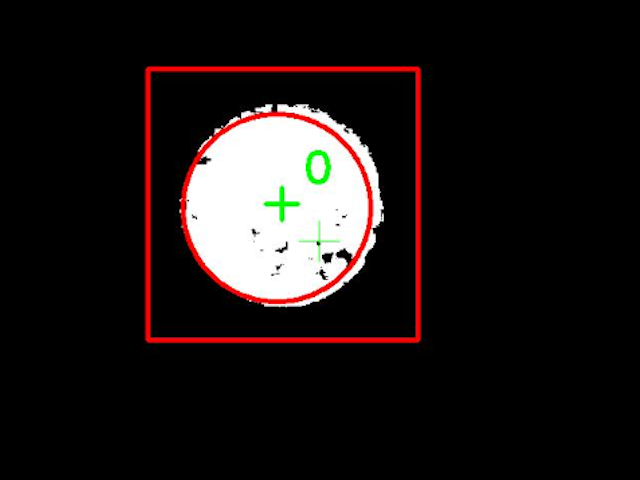
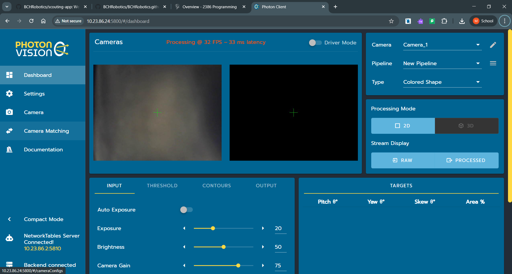
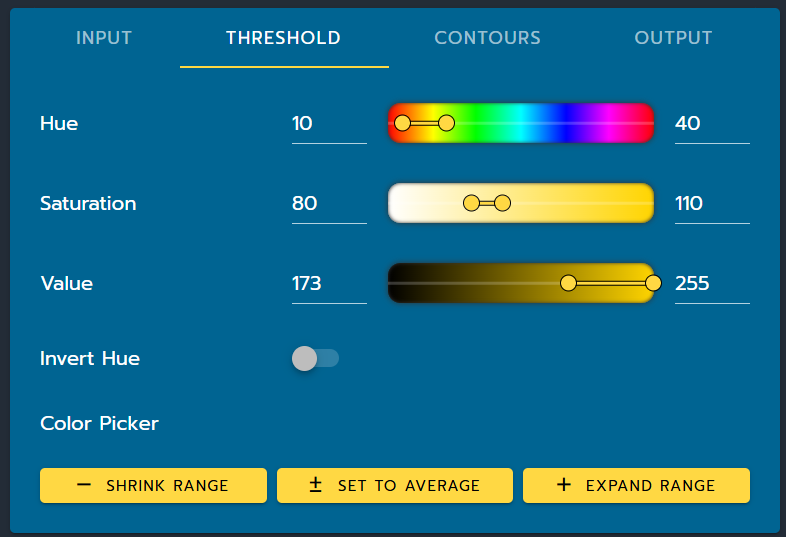
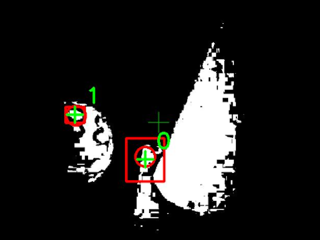

Object Detection With Color Banding
complete
This is the simpler of the two common approaches to object detection.
The idea is to take a source image and pick out regions that have a similar color - the color of the game piece we want to look for.

This is what the camera sees. The green cross marks the center of the image. 
By looking for yellow circles in the image, we can detect the ball (the red square is its bounding box).
Setup
Photonvision has an entire framework for color banding built into it, so it's incredibly easy to set up. First, make sure that the camera pipeline is set to Colored Shape. Then, all the settings you'll need to edit appear below the camera feeds in the Threshold and Contours panels.
Here's what that looks like:

The relevant parts of the photonvision dashboard.
Panel number one, the Threshold panel, allows you to change what colors you're trying to look for.

The Threshold panel
Here's what each of the options do, more specifically:
Hueis, well, the hue of the color that you're looking for.Saturationis the saturation of said color.Valueis, interestingly enough, the value of that color.Invert Hueis self explanatory.
The last three buttons are important - they automatically set the colors to a spot on the image. Just press SET TO AVERAGE and click on the color you want in the camera feed. If you want to be more specific, press SHRINK RANGE and click on the color you want. Pressing EXPAND RANGE and clicking on another area of the image will change the color range to include the color you clicked on. This way you can very quickly tune what colors you're looking for, instead of trying to guess-and-check the HSV (Hue, Saturation, Value) values.
NOTE:
If you are using color banding, you will almost certainly need to re-calibrate the colors EVERY DAY at competition! Beware of this.
Panel number two, the Contours panel, allows you to change what to do with the white regions in the processed image. You can tell Photonvision to look for square regions, circular regions, and so on - I won't pretend to know what exactly Photonvision is doing behind the scenes to look for these different regions, we can just accept that it works well enough.

The Contours panel
Here's what each of the options do:
-
Target Orientationdoes... uh idk -
Target SortTells Photonvision how to decide what's object 0, object 1, and so on. -
AreaIs the range of percent areas that will be considered valid targets. -
Fullnessdoes... idk -
PerimeterIs the range of perimeters (measured in pixels) that are considered valid. -
Speckle Rejectionidk -
Target ShapeIs the closest geometric shape to how the game piece you're looking for will APPEAR in the image (balls are circles, cubes would be squares, etc.)
The rest of the settings depend on your Target Shape, and are fairly self-explanatory.
Flaws
Since we are only looking for color and no other characteristics like shape, this approach struggles to differentiate between items of the same color - yellow balls vs. yellow cones, for example.

This time, the camera can see two yellow objects: a ball and a cone. 
As you can see, the result is a lot messier. Keep in mind that we're only trying to detect the ball.
Worse is when you accidentally detect field elements or other things in the background that have a similar color to the one you want - or just happen to look that way because of the lighting. It gets much worse when the game piece you're looking for is either red or blue (the balls from 2022 is one example) because many field elements are either red or blue. In short, if you're looking for a red or blue game piece you can abandon all hope of using color banding to find it.